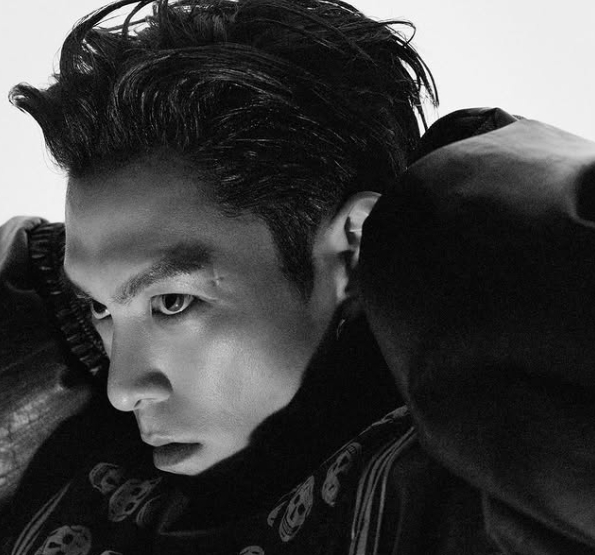

T.O.P Drops First Solo Album In 13 Years — 'Another Dimension' Arrives Ahead Of BIGBANG's Coachella Return

T.O.P is back — and he brought a whole new dimension with him. The BIGBANG rapper and actor has released "Another Dimension," his first full-length solo studio album and his first solo music release in 13 years since 2013's "Doom Dada."
The 11-track album, released through his agency Topspot Pictures, features double lead singles "Studio54" and "Desperado." T.O.P oversaw the entire production alongside acclaimed Italian music producer and sound engineer IRKO, bringing a cinematic quality that matches his artistic ambitions.
A Decade Of Creative Focus
In a recent interview with GQ magazine in Hong Kong, T.O.P described the past decade as "extremely constructive," revealing he had been quietly creating music the entire time. The result is an album that reflects years of deliberate artistic evolution rather than a rushed comeback.
The "Squid Game" art director Chae Kyoung-sun also participated in the project, adding visual depth to an album that T.O.P clearly intends as a multisensory experience. His most recent acting appearance was as Thanos in Season 2 of Netflix's hit series "Squid Game" (2021-25).
BIGBANG's Coachella Return
The album's timing is no accident. "Another Dimension" drops just over a week before BIGBANG's scheduled performances at Coachella on April 12 and 19, which will commemorate the group's 20th debut anniversary. The legendary K-pop group is set to take the Coachella stage at the Empire Polo Club for what promises to be one of the most anticipated performances of the festival.
BIGBANG's Coachella appearance marks a monumental moment for K-pop's second generation. Two decades after their 2006 debut, the group that arguably laid the foundation for K-pop's global expansion is returning to one of the world's biggest music festivals.
Track Listing
While the full track listing details are still emerging, the album's 11 tracks represent T.O.P's most ambitious musical statement to date. The double singles "Studio54" — likely a nod to the legendary New York nightclub — and "Desperado" suggest a range that spans disco-inspired grooves to cinematic balladry.
For fans who have waited 13 years, "Another Dimension" isn't just an album — it's proof that T.O.P was never really gone. He was just building something bigger.